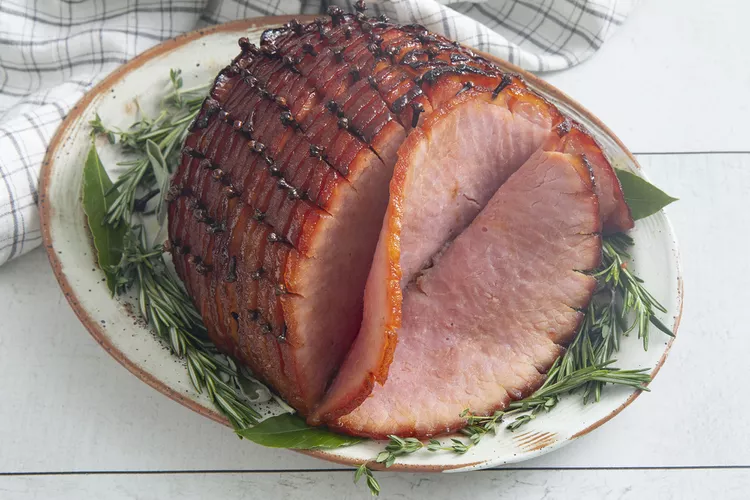

Honey Glazed Ham

LThis ham tastes very much like the famous honey baked ham but costs much less, and there's no need to fight the crowds at holiday time. You can even buy the ham presliced to make it easier and more like the original. It is very good. I make this while preparing the rest of the meal in the kitchen so that I don't forget to baste!
- Prep Time:
- 20 mins
- Cook Time:
- 1 h 15 mins
- Total Time:
- 1 h 35 mins
- Servings:
- 15
Ingredients
- 1 (5 pound) ready-to-eat ham
- ¼ cup whole cloves
- ¼ cup dark corn syrup
- 2 cups honey
- ⅔ cup butter
Directions
- Step 1
- Preheat oven to 165 C°
- Step 2
- Score ham, and stud with the whole cloves. Place ham in foil lined pan.
- Step 3
- In the top half of a double boiler, heat the corn syrup, honey and butter. Keep glaze warm while baking ham.
- Step 4
- Brush glaze over ham, and bake for 1 hour and 15 minutes in the preheated oven. Baste ham every 10 to 15 minutes with the honey glaze. During the last 4 to 5 minutes of baking, turn on broiler to caramelize the glaze. Remove from oven, and let sit a few minutes before serving.
Home